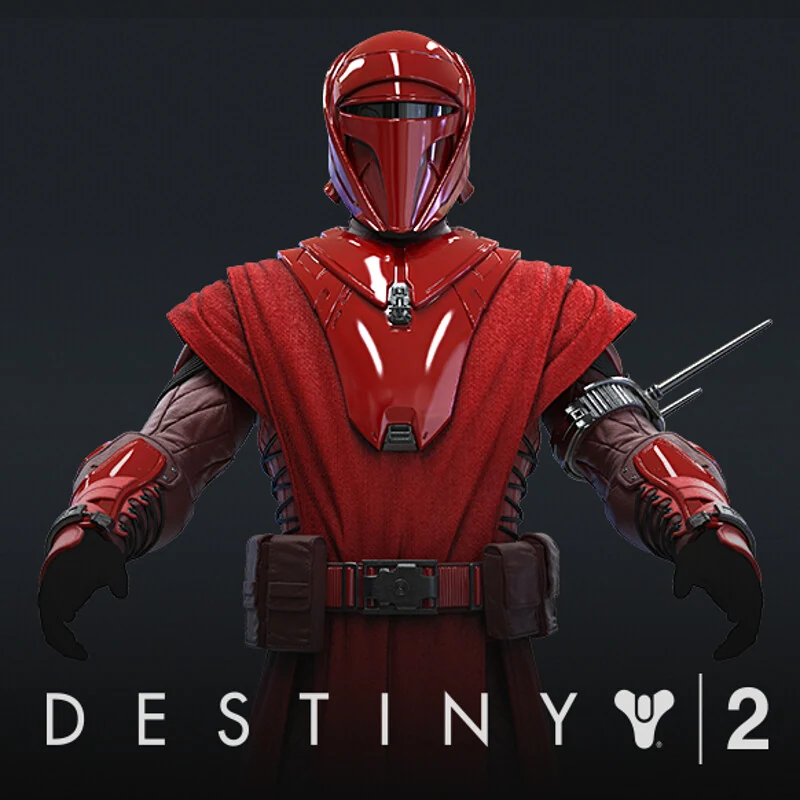
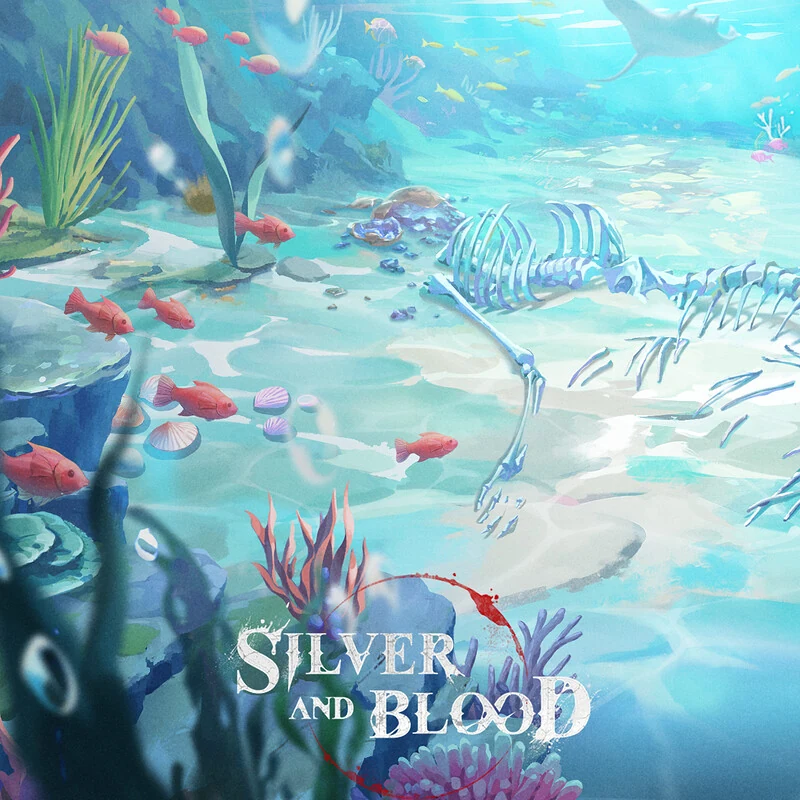
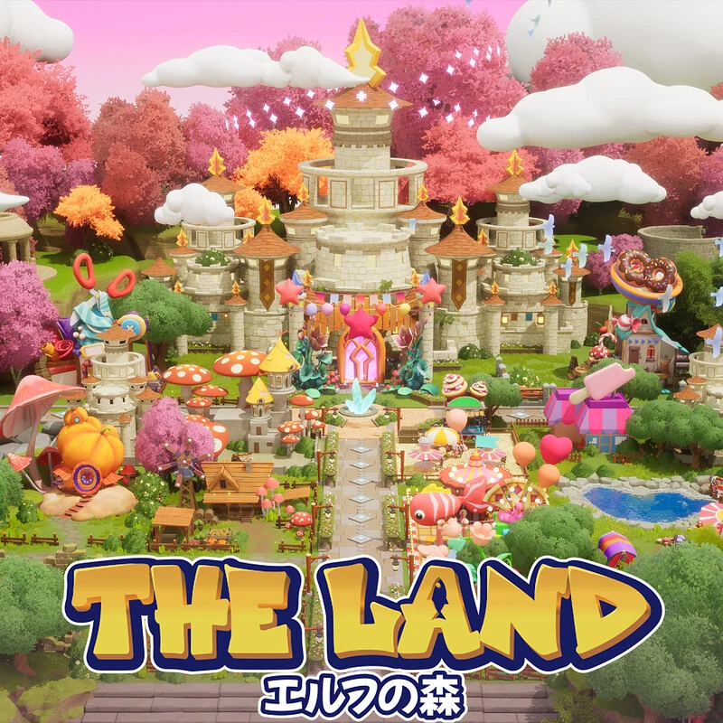
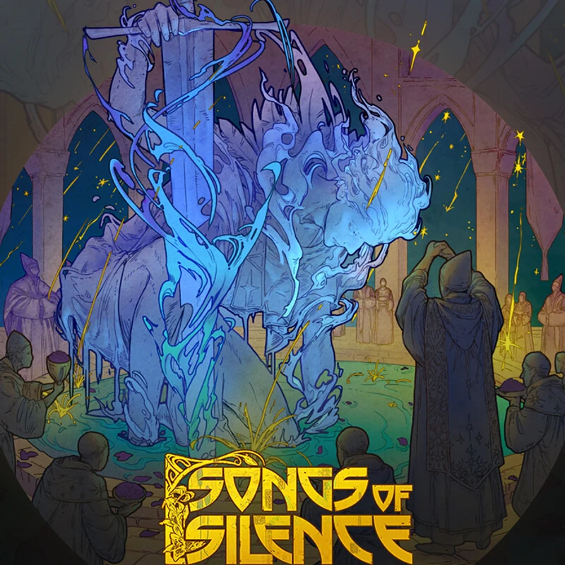
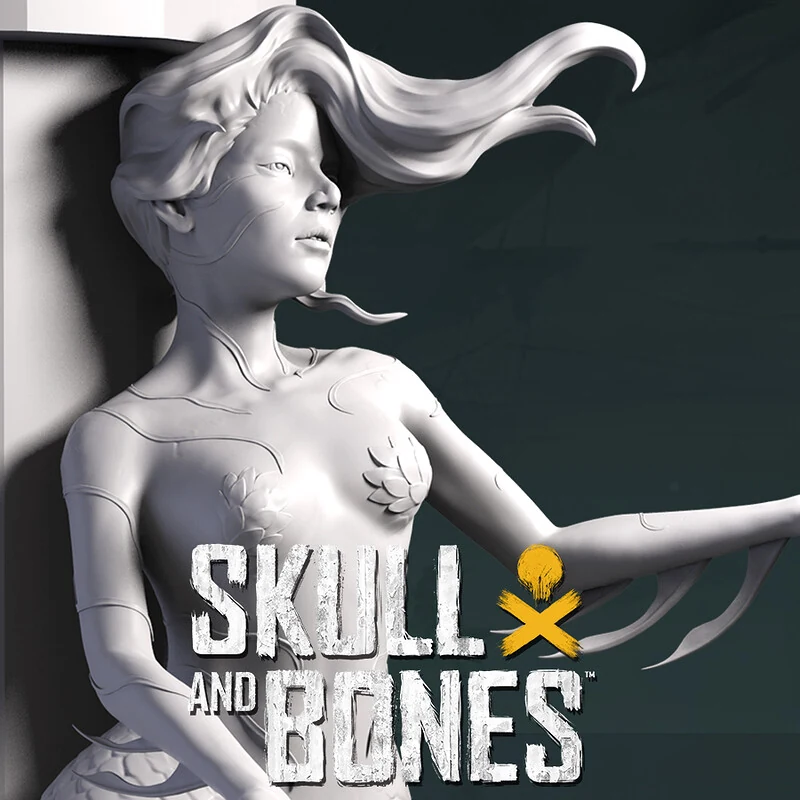

Character art · AAA production
Destiny 2
Why it matters: complex character work supports the credentials needed to win large Western mandates.
Strategy & commercial review · SGX and AIM: WKS
Mid-transformation, and paying for it.
Net cash and a blue-chip client list are funding a push into AAA and Western work, while profit per artist falls. The score rewards resilience; the investment case still needs margin proof.

01 · Evidence · Research score
Winking lands at the top of the Satisfactory band. Financial strength supplies almost half the total points; growth quality is the weakest pillar.
Only 2.6 points separate Winking from Strong, but those points require operating proof, not more capital.
Five years of cash generation lift the score. Thin margins and 82% dependence on one service hold it back.
It rewards a cash-rich five-year record and a network serving 22 of the world's 25 largest publishers, while FY2026 is guided to an adjusted EBITDA loss.
| Component | Weight | Rating /5 | Points | Assessment |
|---|---|---|---|---|
| Five-year revenue CAGR | 6 | 5.0 | 6.0 | 17.7%; about 9.5% excluding Mineloader. |
| Net profit margin | 7 | 2.6 | 3.6 | Adjusted median 9.8%; Keywords remains ahead. |
| ROIC / ROE | 9 | 2.4 | 4.3 | Median ROE about 9.4%, diluted by raised cash. |
| Cash-flow stability | 9 | 5.0 | 9.0 | Positive free cash flow in five of five years. |
| Balance-sheet strength | 9 | 5.0 | 9.0 | US$22.2m net cash; no bank borrowings. |
| Component | Weight | Rating /5 | Points | Assessment |
|---|---|---|---|---|
| Brand recognition | 2 | 3.0 | 1.2 | Third in Asia by cited industry ranking; global clients. |
| Competitive advantage | 7 | 3.0 | 4.2 | Scale and AAA skills, but weak excess returns. |
| Market share | 4 | 3.0 | 2.4 | Fourth globally at about 0.7% in 2023. |
| Customer relationships | 5 | 3.0 | 3.0 | Follow-up revenue 33%; bookings rising. |
| Geographic reach | 2 | 5.0 | 2.0 | Largest country represents 36.8% of revenue. |
| Component | Weight | Rating /5 | Points | Assessment |
|---|---|---|---|---|
| Industry growth | 6 | 3.0 | 3.6 | Most cautious cited forecast is about 7.6% a year. |
| Technology adoption | 4 | 1.0 | 0.8 | AI remains at pilot stage; AI art is under 1% of art sales. |
| New-market expansion | 6 | 3.0 | 3.6 | Ampera and Vertic launched but are not yet material. |
| Revenue diversification | 5 | 1.0 | 1.0 | Art outsourcing is 82% of revenue. |
| Strategic partnerships | 4 | 4.0 | 3.2 | Acer-funded GenMotion.AI partnership renewed twice. |
| Component | Weight | Rating /5 | Points | Assessment |
|---|---|---|---|---|
| Economic resilience | 3 | 5.0 | 3.0 | Grew and stayed profitable through the 2023-24 downturn. |
| Customer diversification | 4 | 2.0 | 1.6 | Largest client about 15-16%; top five about 50%. |
| Technology resilience | 3 | 3.0 | 1.8 | AI response launched; risk remains unmeasured. |
| Regulatory resilience | 2 | 4.0 | 1.6 | Many regimes; more than 30% of sales in China. |
| Operational resilience | 3 | 4.0 | 2.4 | Fourteen studios and ISO 27001; succession unclear. |
02 · Exhibit · The group
Winking's reach is global, but its economics still run through people: artists are booked, staffed and priced against wages, project mix and utilization.
Live games need seasons; AAA games need thousands of assets.
Style fidelity, IP security and references from leading publishers.
Artists are reserved, work is delivered, and rates meet wages and utilization.
Revenue grows by adding artists. Value grows only when price and utilization rise faster than cost.
03 · Exhibit · Portfolio & segments
The artwork demonstrates range across characters, environments and styles. Financially, however, four-fifths of the group still comes from art outsourcing.

Why it matters: complex character work supports the credentials needed to win large Western mandates.

Why it matters: environment breadth expands the number of disciplines Winking can sell into one production.

Why it matters: style matching is a core switching cost when publishers return for follow-up content.

Why it matters: high-fidelity character work supports a move toward more valuable AAA production tasks.
US$37.5m FY2025 revenue, rising 42.0% year on year.
US$7.9m in FY2025. Growth slowed from 48.4% to 2.3% in 1H2026.
Development is the higher rung of the value ladder, and it is the part that stopped growing.
04 · Evidence · Financials
FY2025 revenue reached a record US$45.5m, yet reported profit fell 90% from FY2021. The core question is whether current investment is temporary buildout or a structurally lower price per artist.
Mineloader accelerated revenue in FY2025, but 1H2026 gross margin then fell further to 24.0%.
A strong cash year before the buildout accelerated.
Strategic spending plus higher wages and bonuses.
Also reflects a US$2.9m rise in unbilled contract assets.
05 · Evidence · Bookings
The bookings line is useful as a capacity plan. It is weaker as a revenue guarantee, so the bridge from reserved artists to recognized revenue matters more than the headline.
Bookings show publishers reserving capacity up to 24 months ahead; they remain subject to confirmation.
06 · Evidence · Market position
Winking has credible global access but limited pricing power. The top ten studios together hold only about 7.1% of game-art outsourcing.
Winking needs Keywords' margins before it can argue for Keywords' multiple.
07 · Evidence · Demand economics
Live-service content is fast and repeatable; AAA production is large and lumpy; co-development sits between them. Each reaches Winking's income statement on a different lag.
Characters, skins and seasons. Follow-up work represented 33% of FY2025 revenue.
Large console and PC pipelines; Winking worked on 117 AAA titles in FY2025.
Porting, remasters and capacity gaps. Game Development generated 17% of revenue.
Wages and FX move now; rates may have been agreed months earlier.
Twenty artists at an illustrative US$3,500 each.
A rival bid priced 10% lower.
Lost output plus security audit and onboarding.
Staying beats a 10% saving in year one, but not forever. The switching cost is real and thin.
08 · Decision · Strategic frameworks
The moat is strongest in trust, security and delivery depth. It is weakest where routine assets are easy to bid out or automate.
Many suppliers across Asia; the top ten hold about 7% combined.
Top five clients are about half of revenue, and publishers can run competitive bids.
Artists are the product; wages and bonuses rose US$1.3m in 1H2026.
2D work is accessible; AAA art needs security, references and production depth.
Generative AI and in-house teams compete with outsourced artist time.
Exposed: Western proximity and full co-development, where larger Western peers compete closest to the client.
09 · Decision · Risk matrix
Select a risk to inspect its trigger and mitigation. Position shows qualitative likelihood and impact; labels carry the meaning without relying on color.
10 · Decision · Strategy & outlook
The order matters. Winking should prove unit economics before adding another layer of scale.
Rate reviews and utilization targets before further hiring.
Report Ampera and Vertic revenue and EBITDA separately.
Sell AI-assisted coding, porting and asset workflows.
Publish top-client share, revenue per artist and utilization.
Interactive FY2026 scenario
All indicated bookings convert; US$4.0m of short-cycle work arrives in 2H.
Model, not guidance
Versus US$45.5m
Current score
A base case near US$50m revenue is credible, but management's loss guidance keeps the quality case anchored in balance-sheet strength. The score moves up with profitable Western scale and lower concentration; it moves down if FY2026 free cash flow turns negative.
Sources & evidence
Evidence grade C: about two-thirds of weighted evidence is audited or independent. Customer concentration, follow-up revenue and AI benefits remain company-reported.
Research standard
Figures are in US dollars unless stated. Market data are as of 2 October 2026. This is an independent strategy and commercial review based on public information and the supplied research, not an investment recommendation or a price target.
Project images were supplied with the research brief and are presented as portfolio exhibits.